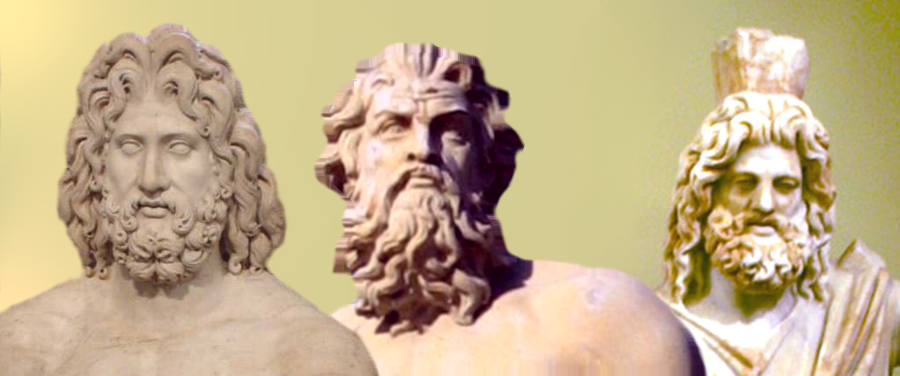

Древнегре́ческая мифоло́гия (мифология Древней Греции) — мифология древних греков, тесно переплетающаяся с их религией. Оказала огромное влияние на развитие культуры и искусства всего мира и положила начало бесчисленному множеству религиозных представлений о человеке, героях и богах.

Источники
Древнейшее состояние греческой мифологии известно из табличек эгейской культуры, записанных линейным письмом Б. Для этого периода характерна немногочисленность богов, многие из них именуются иносказательно, у ряда имён имеются женские аналоги (например, di-wi-o-jo — Diwijos, Зевс и женский аналог di-wi-o-ja). Уже в крито-микенский период известны Зевс, Афина, Дионис и ряд других, хотя их иерархия могла отличаться от позднейшей. Мифология «тёмных веков» (между упадком крито-микенской цивилизации и возникновением античной греческой цивилизации) известна только по позднейшим источникам. Различные сюжеты древнегреческих мифов постоянно фигурируют в произведениях древнегреческих писателей; накануне эпохи эллинизма возникает традиция создавать на их основе собственные аллегорические мифы. В греческой драматургии обыгрываются и развиваются многие мифологические сюжеты. Крупнейшими источниками являются: «Илиада» и «Одиссея» Гомера «Теогония» Гесиода «Библиотека» Псевдо-Аполлодора «Мифы» Гигина «Метаморфозы» Овидия «Деяния Диониса» Нонна Как отмечал в своей работе «К критике политической экономии» Карл Маркс, «греческая мифология составляла не только арсенал греческого искусства, но и его почву»[1]. Некоторые древнегреческие авторы пытались объяснить мифы с рационалистических позиций. Эвгемер писал о богах как о людях, чьи поступки были обожествлены. Палефат в сочинении «О невероятном», анализируя события, описанные в мифах, предполагал их результатами недопонимания или досочинения деталей. Мифология древних греков рассматривается как архетипическая основа их культуры
Происхождение богов
Известный румыно-франко-американский исследователь истории религии Мирча Элиаде даёт следующую периодизацию древнегреческой религии[2]: 15 вв. до н. э. — крито-минойская религия. 15 — 11 вв. до н. э. — архаическая древнегреческая религия. 11 — 6 вв. до н. э. — олимпийская религия. 6 — 4 вв. до н. э. — философско-орфическая религия (Орфей, Пифагор, Платон). 3 — 1 вв. до н. э. — религия эллинистической эпохи. Зевс, согласно легенде, родился на Крите от Реи и титана Крона (др.-греч. Χρόνος или Кронос означает время), а Минос, по которому названа крито-минойская цивилизация, считался его сыном. Однако, та мифология, которую мы знаем, и которую потом переняли римляне, органически связана с греческой народностью. О возникновении этой народности можно говорить с приходом первой волны ахейских племен в начале II тыс. до н. э. В 1850 году до н. э. уже были построены Афины, названные по имени богини Афины. Если принять эти соображения, то религия древних греков возникла где-то в районе 2000 года до н. э.
Религиозные представления древних греков
Религиозные представления и религиозный быт древних греков находились в тесной связи со всей их исторической жизнью. Уже в древнейших памятниках греческого творчества ясно сказывается антропоморфический характер греческого политеизма, объясняющийся национальными особенностями всего культурного развития в этой сфере; конкретные представления, вообще говоря, преобладают над абстрактными, как и в количественном отношении человекоподобные боги и богини, герои и героини преобладают над божествами абстрактного значения (которые, в свою очередь, получают антропоморфические черты). В том или другом культе, у различных писателей или художников с тем или иным божеством соединяются разные общие или мифологические (и мифографические) представления.
Списки богов, мифологических существ и героев
Списки богов и генеалогия отличаются у разных античных авторов. Представленные ниже списки компилятивны.
Первое поколение богов
- Сначала существовал Хаос
- От Хаоса родились Нюкта/Никата/Никта (Ночь, Мгла), Эреб/Скотос (Мрак); Гея (Земля), Тартар (Бездна) и Уран (Небо).
Второе поколение богов
Дети Нюкты и Эреба — Эфир (Воздух) и Гемера (День); братья-близнецы Гипнос (Сон) и Танатос (Смерть), Эрос (Любовь); Керы (Несчастья), Мойры (Судьба), Мом (Злословие и Глупость), Немезида (Возмездие), Эрида (Раздор), Эринии (Мщение); Ата и Апата (обман); Лисса (Бешенство, Безумие). Дети Геи — Понт (внутреннее Море), Кето (владычица морских чудовищ), Нерей (спокойное море), Тавмант (морские чудеса), Форкий (страж моря), Эврибия (морская сила), титаны и титаниды, гекатонхейры и гиганты.